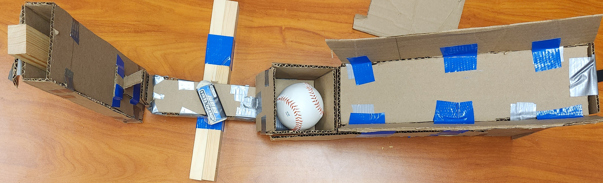

Engineering Notebook
This my favorite food reciepe.

8/19/22:
I learned the basics for creating a website using html.
Week of 8/26/22:
I have learned how to apply color, add pictures and make this site available online using github.
Week of 9/2/22:
I learned about the basics for mechanical engineering and safety for the engineering lab. I started the Tinkercad, a 3D modeling website, and experimented with it as well as starting the Rube Goldberg project. Some issues initail were controlling Tinkercad with a trackpad as it was really difficult to be reliable. For Thursday's challenge day, I was given the task to replicaate a home appliance in Tinkercad. My choice to replicate was a Fridge as I believed it was easier. An issue that occured was not being used to how to control Tinkercad. Even with a mouse, it was often hard to control it.


Week of 9/5/22:
This week, my Rube Goldberg contraption was finished. I was put on a team with Druv, Daniel and Ani to build a master Rube Goldberg contraption. We agreed upon one design that utilizes concepts from each of our own designs. A leading ramp, with a lever that hits a tower that pops the balloon.
Week of 9/5/22:
This week, we measured, cutted and started to put together our finalized Rube Goldberg design. Our group was mostly efficient. We had equal opportunities putting things together. Next week, we should be able to finish the Rube Goldberg contraption. During Challenge Day, the goal was to make a paper boat that can hold the highest possible weight without sinking for 5 minutes. Our group succeded with a boat with 15.1 lbs.
Challenge Day: Paper Boat
Week of 9/5/22:
This week, we put together all the pieces for the contraption. We agreed upon a counterweight, a battery. Unfortunately, we had to make changes to the original Cad model. Firstly, we had to add railings to the ramp in order to keep the baseball stable enough. Secondly, we had to add arms to the ramp itself to prevent the lever from moving all too much. Another issue was the original tater as we had difficulties with the smaller design. Eventually through vigourus testing, we made the tater out of 2 long wood beams taped together. An additional issue was the weight towards the final componet as it often fell forward or never fell. Our solution was to add a wood beam which was enough weight to allow the piece to reliable fall onto the balloon. Thursday's challenge day involved estimating the total number of bathroom stalls in the school. We asked around and got an estimated 40 stalls in total. For the Rube Goldberg competition, it took two attempts to pop the balloon. The primary issue was that the balloon was too large preventing the contraption from functioning properly.
Original Cad Design:

Final Build (Side with balloon):

Final Build (Top):

Video of RubeGoldberg in action: